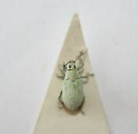
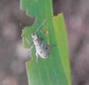
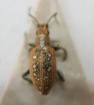

| Home |
| SORGHUM |
| 1. Sorghum Shootfly |
| 2. stem borer |
| 3. pink stem borer |
| 4. shoot bug |
| 5. earhead bug |
| 6. sorghum midge |
| 7. plant lice (Aphids) |
| 8. earhead web worm |
| 9. gram caterpiller |
| 10. plant bug |
| 11. stink bug |
| 12. mirid bug |
| 13. slug caterpiller |
| 14. Leaf roller |
| 15. flea beetle |
| 16. red hairy caterpiller |
| 17. semilooper |
| 18. weevils |
| 19. wingless grasshopper |
| Integrated Pest Management |
| Questions |
| Download Notes |
PESTS OF SORGHUM :: Minor Pests :: Ash Weevils
18. Ash weevils: Myllocerus maculosus , M.viridanus, M.subfasciatus & M. discolor (Curculionidae: Coleoptera)
Distribution and status: Throughout India
Host range: Bajra, maize, sorghum, pulses, groundnut, cotton, guava
Damage symptoms: Leaf margins are notched resulting in wilting of plants in patches. Plants come off easily when pulled. Roots are eaten away by grubs. Adult feed on leaves.
Bionomics
M.viridanus: Adult weevil with greenish white elytra
M. maculosus: Adult weevil with greenish white elytra having dark lines.
M. discolor: Adult weevil is brown with white spot on elytra. Grub is small, white apodous and found feeding on roots. Weevil appear during summer and lay ovoid, light yellow eggs in the soil. Female lays on an average 360 eggs over a period of 24 days. Eggs hatch in 3-5 days. Grub period 1-2 months, pupate in soil inside earthern cells and pupal period is 7-10 days. Life cycle is completed in 6-8 weeks. There are 3-4 generations in a year.Adults live fairly long for4-5 months in the winter.
M. subfasciatus: The adult weevil light grayish to white with four black spots on the wing covers. The eggs are light yellow and laid deep in the soil. The grubs are fleshy, yellow-colored. Pupation occurs in earthen cells in the soil. Egg, larval, and pupal periods last for 3 - 11, 3-42, and 5- 7 days respectively.
 |
 |
 |
M. viridanus |
M. subfasciatus |
M. discolor |
Management
1. Pest can be suppressed by disturbing the soil upto a depth of 7.5 cm and destroying the immature stages
2. Spray 2.5 kg carbaryl 50 WP in 500 L of water/ha